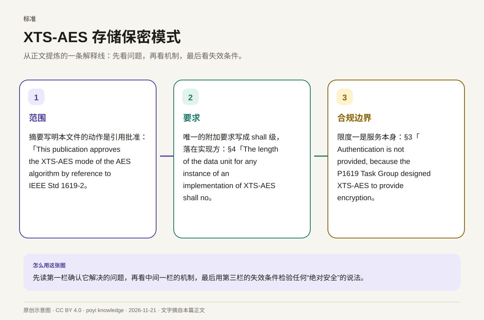
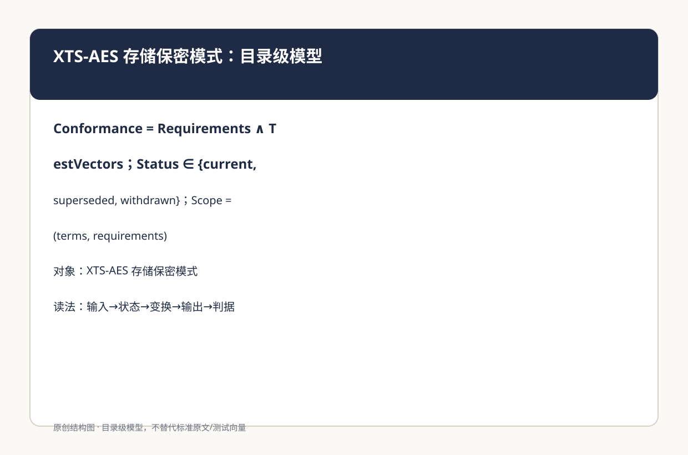

原理与机制
标准：XTS 存储加密模式（The XTS-AES Mode for Confidentiality on Storage Devices）。摘要写明本文件的动作是引用批准：「This publication approves the XTS-AES mode of the AES algorithm by reference to IEEE Std 1619-2007, subject to one additional requirement, as an option for protecting the confidentiality of data on storage devices.」同一摘要立刻减一项服务：「The mode does not provide authentication of the data or its source.」§1 交代系列位置：「This publication is the fifth Part in a series of Recommendations regarding modes of operation of symmetric key block ciphers.」即本文件不重述算法步骤，规定对象是外部标准之上的一个附加要求与其适用性。

为什么重要
对象来自另一标准：§3 写「The Security in Storage Working Group (SISWG) of the P1619 Task Group of the Institute of Electrical and Electronics Engineers, Inc (IEEE) developed and specified XTS-AES in IEEE Std.1619-2007 [2].」本文件要补的是把该构造收进 NIST 的批准清单并限定场景：「The XTS-AES mode was designed for the cryptographic protection of data on storage devices that use of fixed length “data units,” as defined in Ref.[2].」设计来源则追溯到外部工作：「The XTS-AES mode is an instantiation of Rogaway’s XEX (XOR Encrypt XOR) tweakable block cipher」。即本文件自陈的立场是引用外部标准加以批准，并声明该模式面向存储而非通用加密。
应用与实例
唯一的附加要求写成 shall 级，落在实现方：§4「The length of the data unit for any instance of an implementation of XTS-AES shall not exceed 220 AES blocks.」（220 同样是丢了上标的 2 的 20 次方）同段立刻标明该限的来源与强制程度差别：「Note that Subclause 5.1 of Ref.[2] recommends this limit but does not require it.」符合性的定义是条件式的：「An implementation of the XTS-AES encryption mode may claim conformance with this Recommendation if every supported instance satisfies this length requirement for a data unit, in addition to all of the requirements in Clauses 1-6 of Ref.[2].」验证路径写在同节末段：「Conformance testing for implementations of XTS-AES is conducted within the framework of the Cryptographic Module Validation Program (CMVP), a joint effort of NIST and the Communications Security Establishment Canada.」四句合起来是本文件的实际分量：算法步骤留在外部标准，NIST 只补一条数据单元长度上限，符合性的申报系于该上限与外部标准条款 1 至 6 同时满足，验证再交给 CMVP 路径。

边界与攻击面
限度一是服务本身：§3「Authentication is not provided, because the P1619 Task Group designed XTS-AES to provide encryption without data expansion, so alternative cryptographic methods that incorporate an authentication tag are precluded.」限度二是场景：§3「The XTS-AES mode was not designed for other purposes, such as the encryption of data in transit.」限度三是物理位置由实现自定：§5「Subclause 5.1 of [2] indicates that an implementation of XTS-AES should include a mapping between the pairs of indices that define the blocks (and possibly a single partial block) of a data unit and their physical location in the storage device, but that the mapping itself is outside the scope of the standard.」适用性上，§2 的措辞带条件：「but such standards and guidelines shall not apply to national security systems without the express approval of appropriate federal officials exercising policy authority over such systems.」四条合起来是：无认证、不用于传输、块的物理次序与位置交由实现与外部标准，国家安全系统的适用另需明示批准。
历史与背景
页眉首行给出编号与日期「NIST Special Publication 800-38E January, 2010」，扉页日期行为 January 2010，作者栏 Morris Dworkin；引用行是「Natl.Inst.Stand.Technol.Spec.Publ.800-38E, 9 pages (January 2010) CODEN: NSPUE2」，本份文本无 DOI 行。致谢页点名外部工作组与评审同事：「The author wishes to thank Matt Ball, the Chair of the Security in Storage Working Group of the IEEE P1619 Task Group, as well as the author’s colleagues who reviewed drafts of this publication and contributed to its development, especially Elaine Barker, Lily Chen, John Kelsey, Tim Polk, Bill Burr, and Sharon Keller.」附录 A 的书目给出被引用的标准及其日期：「IEEE Std 1619-2007, The XTS-AES Tweakable Block Cipher, Institute of Electrical and Electronics Engineers, Inc., Apr.18, 2008.」即 2007 年编号的标准在 2008 年 4 月发布，本文件于 2010 年 1 月据其批准。
逐步示例与核验
形式模型与复算步骤
[S=\min_i S_i,\quad S_i\in{\text{密钥强度},\text{分组安全},\text{实现安全}}]
XTS 存储加密模式的公开参数、密钥/随机数与消息；变量说明：S 为综合安全强度；各分量取最小值，不能只看密钥位数。1.读取标准规定的密钥/分组/模式参数。2.按标准表换算等效强度。3.取最弱分量作为系统强度。边界：公式只覆盖已登记的参数与假设；参数取值、标准版本和实现细节仍以来源为准。
参考出处
- Wikipedia search entry for XTS 存储加密模式. https://zh.wikipedia.org/w/index.php?search=XTS%20%E5%AD%98%E5%82%A8%E5%8A%A0%E5%AF%86%E6%A8%A1%E5%BC%8F
- Handbook of Applied Cryptography (Menezes, van Oorschot, Vanstone). https://www.cacr.math.uwaterloo.ca/hac/